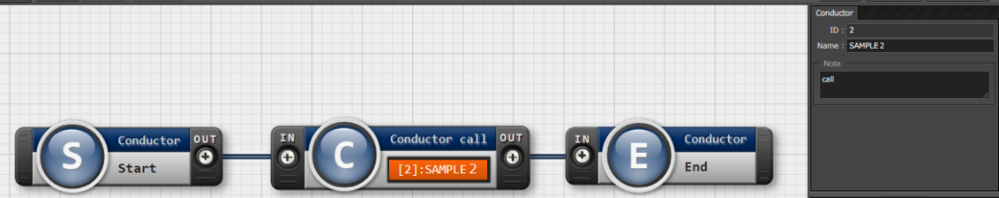
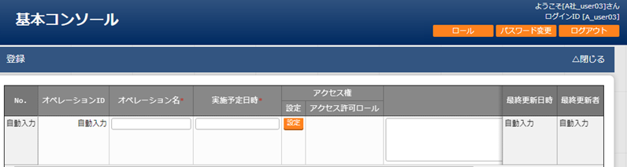
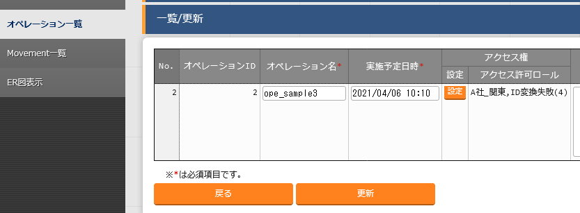
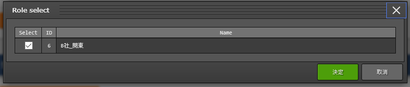
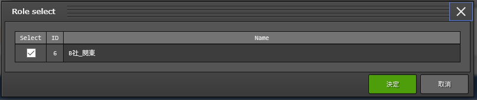
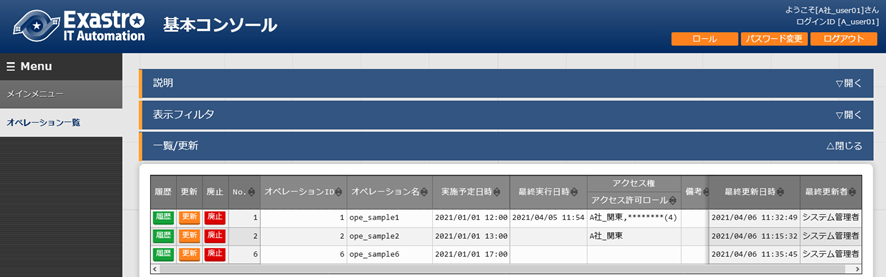

2.3. Conductor¶
2.3.1. はじめに¶
本書は、ITAのConductorの機能および操作方法について説明します。
2.3.2. ITA Conductorの概要¶
2.3.3. ITA Conductorのメニュー、画面構成¶
ITA Conductorメニュー 一覧¶
No |
メニューグループ |
メニュー |
説明 |
|---|---|---|---|
1 |
Conductor |
Conductorインターフェース情報 |
Conductorのインターフェース情報をメンテナンス(閲覧/更新)できます。 本メニューは必ず1レコードである必要があります。 |
2 |
Conductor一覧 |
Conductorをメンテナンス(閲覧/廃止)できます。 詳細 をクリックするとConductor編集メニューに遷移します。 |
|
3 |
Condoctor編集/作業実行 |
Conductorを編集/作業実行できます。 |
|
6 |
Conductor作業一覧 |
Conductor一覧(実行履歴)を閲覧できます。 詳細 をクリックするとConductor作業確認に遷移します。 |
|
5 |
Conductor作業確認 |
Conductor作業の実行結果を確認できます。 |
2.3.4. ITA Conductor利用手順¶
作業フロー¶
「機器情報」の登録方法については、「Ansible共通」を参照してください。
「オペレーション」の登録方法については、「オペレーション一覧」を参照してください。
Movementの登録方法については、各Driverの利用手順マニュアルを参照してください。
- Conductor実行時の各 Movementで共有するディレクトリパスが利用可能です。Movement間で情報伝達する必要がある場合、共有するディレクトリパスを利用する事で情報の受け渡しが可能となります。共有対象については、「Ansible driver」と「Terraformdriver」を対象としています。「Ansible driver」に関する詳細は、別紙、「利用手順マニュアルAnsible-driver」を参照してください。「Terraform driver」に関する詳細は、別紙、「利用手順マニュアルTerraform-driver」を参照してください。
「Conductor call」,「Symphony call」で実行した作業フローについては、それぞれ個別に共有ディレクトリパスを持ちます。（作業フローを跨いでいるMovemetについては、共有の対象外となります。）

図 2.3 作業フロー¶
2.3.5. 機能・操作方法説明¶
ITA Conductor¶
Conductorインターフェース情報¶
「Conductorインターフェース情報」メニューでは、Conductorから実行される各Movementで共有するディレクトリのパスと「Conductor作業確認」メニューのリフレッシュ間隔を設定します。
「Conductorインターフェース情報」メニュー -「一覧」サブメニューの詳細は以下のとおりです。
表 2.11 「一覧」サブメニュー¶ 項目
説明
入力必須
入力形式
制約事項
ConductorインターフェースID
{{#: こちらに入る説明内容の記入をお願い致します。}}
自動入力
状態監視周期（単位ミリ秒）
「Conductor 作業実行」の表示をリフレッシュする間隔を入力します。通常は3000ミリ秒程度が推奨値です。
○
手動入力
最小値1000ミリ秒
備考
自由記述欄です。
手動入力
Conductor一覧¶
「Conductor一覧」メニューでは、登録済みのConductorクラスを参照/廃止できます。
「一覧」サブメニューの 詳細 をクリックすると、その Conductor編集/作業実行 画面へ遷移できます。

図 2.4 「Conductorクラス一覧」メニュー¶
Conductor編集/作業実行¶
「Conductor編集」について¶
モード |
説明 |
|---|---|
編集モード |
|
閲覧モード |
|
更新モード |
|
選択したNodeにより、画面右上（詳細情報）に表示される内容が変わります。
図 2.5 「Conductor編集」メニュー¶
Node一覧¶
画面右側下部の領域には、利用可能なNodeが表示されます。
以下のタブから構成されます。
Movementタブ
登録済みのMovementのIDと名称の一覧
Functionタブ
Conductor end
Conductor pause
Conductor call
Symphony call
Conditional branch
Parallel branch
Parallel merge
Status File branch
各Nodeについて、詳細は以下の通りです。
画像 |
名称 |
動作説明 |
|---|---|---|
|
Conductor start |
Conductorを開始します |
|
Conductor end |
Conductor終了します。 ※複数のConductor endがある場合、全てのConductor endが終了を待ちます。 |
|
Conductor pause |
ワークフローを一時停止します。 一時停止を解除すると、次の処理へ進みます。 |
Conductor call |
別の登録済みのConductorクラスを呼び出し実行します。 ※呼び出し先のConductorが警告終了で終了した場合、正常終了と同じように後続の処理を実行して、呼び出し元のステータスには影響しません。 |
|
Symphony call |
登録済みのSymphonyクラスを呼び出し実行します。 |
|
|
Conditional branch |
接続された、「Movement」、「Conductorcall」、「Symphonycall」の結果によって、後続の処理を分岐させます。 指定可能なステータスは、以下になります。 ・正常終了 ・異常終了 ・緊急停止 ・準備エラー ・想定外エラー ・SKIP完了 ・警告終了 |
|
Parallel branch |
並列して、「Movement」、「Conductorcall」、「Symphonycall」を実行します。 ※並列可能な実行数は、ITAの構成やサーバースペックに依存します。 |
|
Parallel merge |
接続している全Nodeの処理が完了後、次の処理を実行します。 |
|
Status file branch |
接続された、「Movement」の作業結果ディレクトリ内のステータスファイルの内容によって、後続の処理を分岐させます。 |
Movement各種 |
Movementを実行します。 |


{kind=link}
{kind=link}
{kind=link}
{kind=link}
Nodeにおける制約事項は以下の通りです。
登録/更新を行うには、全てのNodeのIN/OUTが接続されている必要があります。

図 2.6 Node制約事項（正常例：Parallel branch）¶
Parallel mergeを使用する場合、Parallel branchを使用している必要があります。

図 2.7 Node制約事項（NG例：Parallel branch）¶
Conditional branch で分岐されたフローについてParallel mergeでマージする事はできません。

図 2.8 Node制約事項（NG例：Conditional branch）¶
Parallel branch、Conditional branch、Parallel merge、Conductor pauseについて、連続して同じ種類のNodeを接続する事はできません。

図 2.9 Node制約事項（NG例：連続使用）¶
Conductor callについて、更新中のConductorをConductor callで指定し、更新することはできません。
 図 2.10 Node制約事項（NG例：Conductor call）¶
各NodeをNode一覧からドラッグ&ドロップで追加することが可能です。
Node選択時、画面右上（詳細情報）に表示される「備考」欄には、処理説明やコメントをメモすることが可能です。
「備考」欄の記述は処理実行に影響はありません。Web上でのみ参照できるメモ欄です。
Node設定後、「登録」ボタンを押下してConductorクラスを登録します
{kind=link}
詳細情報¶
画面右側上部の領域には、選択しているNodeの詳細情報が表示されます。
選択しているNodeによってタブの名称が変わります。
Node未選択時（Conductorタブ）
Node未選択の場合表示されます。
タブ内の項目は以下の通りです。
表 2.14 「Conductor」タブ¶ 項目
説明
入力必須
入力形式
制約事項
ID
Conductorに対応した一意のIDが自動入力されます。
-
自動入力
-
名称
任意のConductor名称を入力します。
○
手動入力
-
更新日時
選択したConductorが更新された日時が自動入力されます。
-
自動入力
-
備考
Conductorに対する説明やコメントを入力します。
-
手動入力
-
 図 2.11 「Conductor」名称タブ¶

図 2.12 「Notice」のポップアップ¶

図 2.13 「Permission role」のポップアップ¶
Movement選択時（Movementタブ）
「Node一覧」における「Movement」タブ内のNodeを選択した場合表示されます。
タブ名は選択したMovementのオーケストレータ名が表示されます。
タブ内の項目は以下の通りです。
表 2.15 「Movement」タブ¶ 項目
説明
入力必須
入力形式
制約事項
Movement ID
選択したMovementのIDが表示されます。
-
自動入力
-
名称
選択したMovementの名称が表示されます。
-
自動入力
-
スキップ
対象作業をスキップする場合にチェックします。「Conductor作業実行」メニューにて、変更可能なパラメータです。
-
手動入力
-
個別オペレーション
オペレーション選択 押下して表示される一覧から任意の値を選択できます。選択したオペレーション名が表示されます。-
選択
-
備考
Nodeに対する説明やコメントを入力できます。
-
手動入力
-

図 2.14 「Movement」タブ¶
 図 2.15 「Operation select」のポップアップ¶
Conductor start/Conductor end/Conductor pause選択時（Functionタブ）
「Node一覧」における「Function」タブ内の「Conductor start」「Conductor end」「Conductor pause」を選択した場合表示されます。
タブ内の項目は以下の通りです。
表 2.16 「Function」タブ¶ 項目
説明
入力必須
入力形式
制約事項
備考
Nodeに対する説明やコメントを入力できます。
-
手動入力
-

図 2.16 「Functionタブ」¶
Conductor call選択時（Conductor callタブ）
「Node一覧」における「Function」タブ内の「Conductorcall」を選択した場合表示されます。
タブ内の項目は以下の通りです。
表 2.17 「Function」タブ¶ 項目
説明
入力必須
入力形式
制約事項
Default skip
対象作業をスキップする場合にチェックします。Conductor作業実行画面にて、変更可能なパラメータです。-
手動入力
-
Conductor
「Conductor Select」ボタンを押下して表示される一覧からConductorを選択できます。選択したConductorクラス名称が表示されます。-
選択
-
Operation
「Conductor Select」ボタンを押下して表示される一覧から、任意のオペレーションを選択できます。指定したオペレーション名が表示されます。-
選択
-
Note
Nodeに対する説明やコメントを入力できます。
-
手動入力
-

図 2.17 「Conductor call」タブ¶
 図 2.18 「Conductor select」のポップアップ¶
Conditional branch選択時（Conditional branchタブ）
「Node一覧」における「Function」タブ内の「Conditionalbranch」を選択した場合表示されます。
タブ内の項目は以下の通りです。
※警告終了は、Conductorにのみ対応したステータスとなります。「Movement」と「Conditional branch」を接続した場合、警告終了のCaseへの分岐へ進行することはありません。 図 2.19 「Conditional branch」タブ¶
Parallel branch選択時（Parallel branchタブ）
「Node一覧」における「Function」タブ内の「Parallelbranch」を選択した場合表示されます。
タブ内の項目は以下の通りです。
表 2.18 「Parallel branch」タブ¶ 項目
説明
入力必須
入力形式
制約事項
平行分岐設定
分岐数を設定します。 分岐追加 / 分岐削除 を押下して、分岐を増減します。デフォルトの分岐数は2です。2以下の値は設定できません。-
選択
-
備考
Nodeに対する説明やコメントを入力できます。
-
手動入力
-

図 2.20 「Parallel branch」タブ¶
Parallel Merge選択時(Parallel Mergeタブ)
「Node一覧」における「Function」タブ内の「Parallel merge」を選択した場合表示されます。
タブ内の項目は以下の通りです。
表 2.19 「Parallel Merge」タブ¶ 項目
説明
入力必須
入力形式
制約事項
case
分岐数を設定します。「Add」ボタン/「Delete」ボタンを押下して、分岐を増減します。デフォルトの分岐数は2です。2以下の値は設定できません。-
選択
-
Note
Nodeに対する説明やコメントを入力できます。
-
手動入力
-

図 2.21 「Merge」タブ¶
「End」タブ
「Node一覧」における「Function」タブ内の「End」を選択した場合表示されます。
タブ内の項目は以下の通りです。
表 2.20 「Merge」タブ¶ 項目
説明
入力必須
入力形式
制約事項
End Status
Endまで処理された際に、選択されたステータスが、Conductorのステータスへ反映されます。- 正常終了 (デフォルト値)- 警告終了- 異常終了複数のEndノードまで処理された場合、反映されるステータスの優先度は以下です。優先度： 正常終了 < 警告終了 < 異常終了-
選択
-
Note
Nodeに対する説明やコメントを入力できます。
-
手動入力
-

図 2.22 「End」タブ¶
「Status file branch」タブ
「Node一覧」における「Function」タブ内の「Status file branch」を選択した場合表示されます。
タブ内の項目は以下の通りです。
表 2.21 「Merge」タブ¶ 項目
説明
入力必須
入力形式
制約事項
if /elseif
Movement のステータスファイルによる条件分岐を設定します。「Add」ボタン/「Delete」ボタンを押下して、分岐を増減します。デフォルトの分岐は「if」と「else」です。-
選択
-
Note
Nodeに対する説明やコメントを入力できます。
-
手動入力
-
図 2.23 「Status file branch」タブ¶
注釈
※参照するステータスファイルについて参照するステータスファイルは、各Movmentの作業結果ディレクトリ配下の「MOVEMENT_STATUS_FILE」を参照します。
ステータスファイルが存在しない場合、「else」側の処理を行います。
ステータスファイル内の内容が、複数行（改行コードを含む）場合、改行コード以降は、除外した値を評価対象とします。
例）改行含むステータスファイルの内容1 23 4
ステータスファイルの内容として、「1」として、評価を行います。表 2.22 ステータスファイルITA独自変数¶ ITA独自変数
変数指定内容
制約事項
__movement_status_filepath__
作業結果ディレクトリ配下の「MOVEMENT_STATUS_FILE」のパス
※
※「Ansible-Legacy」、「Ansible-Pioneer」、「Ansible-LegacyRole」で対応しています。
「Node」タブ
「Node一覧」における「Movement」タブおよび「Function」タブ内のNodeを複数選択した場合表示されます。
Nodeを複数選択する方法については、ドラッグアンドドロップでの範囲選択の他、「shift」キーを押下しながらの選択が可能です。
タブ内の項目は以下の通りです。
表 2.23 「Node」タブ¶ 項目
説明
入力必須
入力形式
制約事項

複数選択したNodeを左揃えに整列します。
-
選択
-

複数選択したNodeを左右中央揃えに整列します。
-
選択
-

複数選択したNodeを右揃えに整列します。
-
選択
-

複数選択したNodeを上揃えに整列します。
-
選択
-
複数選択したNodeを上下中央揃えに整列します。
-
選択
-

複数選択したNodeを下揃えに整列します。
-
選択
-

複数選択したNodeを左右等間隔にします。
-
選択
-

複数選択したNodeを上下等間隔にします。
-
選択
-

図 2.24 「Node」タブ¶
「Conductorクラス編集」メニューで実行可能な操作は以下の通りです。
表 2.24 「Conductorクラス編集」メニュー実行操作一覧¶ 項目
説明
新規
更新
備 考
EDIT
VIEW
EDIT
新規
初期状態へ戻します。
〇
保存
描画されている状態を、ファイル形式で保存します。
〇
読み込み
保存したファイルを読み込み、状態を復元します。
〇
取り消し
直前の処理を取り消します。
〇
〇
やり直し
直前の取り消しをやり直します。
〇
〇
ノード削除
選択しているNodeを削除します。
〇
〇
登録
登録を実施します。
〇
〇
編集
EDITモードへ変更し、Conductorの編集を行います。
〇
〇
流用新規
登録済のConductorを流用して、新規作成が行えます。
〇
〇
更新
編集内容を更新します。
〇
再読込
変更をキャンセルし、変更前の状態へ戻します。
〇
キャンセル
変更をキャンセルし、VIEWモードへ変更します。
〇
{kind=link}
{kind=link}
{kind=link}
{kind=link}
{kind=link}
{kind=link}
「VIEW」モードについて¶

図 2.25 「Conductorクラス編集」メニュー（「VIEW」モード）¶
項目 |
説明 |
|---|---|
「編集」ボタン |
登録済みのConductorを編集できます。 |
「流用新規」ボタン |
登録済みのConductorをコピーして新規作成が行えます。 |
「EDIT」モード¶

図 2.26 「Conductorクラス編集」メニュー（「EDIT」モード）¶
項目 |
説明 |
|---|---|
「全体表示」ボタン |
Node すべてが表示される縮尺で表示されます。 |
「表示リセット」ボタン |
「Conductor start」を基準に表示がリセットされます。 |
「フルスクリーン」ボタン |
ブラウザの表示がフルスクリーンになります。
※フルスクリーン時は「フルスクリーン解除」ボタンに変わります。
|
「更新」ボタン |
編集内容が保存されます。 |
「再読込」ボタン |
編集内容が破棄されて登録内容の状態に戻ります。 |
「キャンセル」ボタン |
「編集」ボタン押下前の状態に戻ります。 |
Conductor作業実行¶
「Conductor 作業実行」メニューでは、Conductor実行の指示を行います。¶
「Conductor[一覧]」サブメニューには、「4.1.3 Conductorクラス一覧」で登録したConductorが表示されます。
「オペレーション[一覧]」サブメニューには、「基本コンソール」メニューグループ > 「オペレーション一覧」メニューで登録したオペレーションが表示されます。
別紙、「利用手順マニュアル 基本コンソール」を参照。
「Conductor[一覧]」サブメニュー及び「オペレーション[一覧]」サブメニューのラジオボタンからそれぞれ選択し「実行」ボタンを押下すると「4.1.6 Conductor作業確認」に遷移し、作業のトレースが始まります。
「スケジューリング」サブメニューにて予約日時を入力して「実行」ボタンを押下すると、作業予約が作られます。登録情報は「4.1.7 Conductor作業一覧」で確認できます。
現在時刻より過去の日時は入力できません
Movement、Conductor Call、Symphony CallのOperation, skipのみ、設定値を変更可能です。
Conductor編集で登録したデータへ変更は反映されません。作業実行にのみ反映されます。
実行したConductorに設定されるアクセス権について、実行時に選択したConductor、オペレーションに設定されたアクセス権の共通するロールを継承します。共通するロールが存在しない場合、作業実行できません。

図 2.27 「Conductor作業実行」メニュー¶
「Conductor実行」メニューの共通項目は以下のとおりです。
項目 |
説明 |
入力必須 |
入力形式 |
制約事項 |
|---|---|---|---|---|
予約日時 |
Conductorの実行予定日時を指定します。 |
- |
手動入力 |
現在時刻より過去の日時は入力不可 |
Conductor[一覧] |
「 4.1.7Conductorクラス一覧」で登録したConductorが表示されます。 |
○ |
ラジオボタン |
|
オペレーション[一覧] |
「4.1.4 投入オペレーション一覧」で登録したオペレーションが表示されます。 |
○ |
ラジオボタン |
|
Skip |
対象作業をスキップする場合にチェックします。
※以下「オペレーションの指定について」参照
|
- |
チェックボックス |
|
Operation |
※以下「オペレーションの指定について」参照 |
- |
手動入力 |
|
Notice |
通知の設定を確認できます。 |
- |
ボタン |
|
実行 |
登録したConductorを実行します。 |
○ |
ボタン |
Tip
Conductor作業確認¶
「Conductor作業確認」メニューでは、Conductorの実行状態を表示します。¶
「4.1.7Conductor作業一覧」の「詳細」ボタンを押下すると、選択したConductor作業の処理状況をモニター表示します。状況に応じて「予約取消」、「停止解除」や「緊急停止」の投入が可能です。
Nodeを選択すると、画面右側のタブ名が「Node」となり、実行状況を表示します。
実行中以降のステータスになっている実行状況サークルを押下すると、各ドライバの「作業状態確認」メニューに遷移し作業実行状況の詳細を確認することが可能です。
「Movement」、「Conductor Call」、「Symphony Call」のNodeについては、「Node」タブ内の「Operation status」からも「作業状態確認」メニューに遷移できます。
「Movement」、「Conductor Call」、「Symphony Call」のNodeでのエラーが発生した場合、ログにメッセージが表示されます。
{kind=link}
図 2.28 「Conductor作業確認」メニュー¶
注釈
選択したConductor作業に予約日時が設定されていて、かつ未実行の場合は、「予約取消」ボタンが表示されます。
「予約取消」ボタンを押下すると、「4.1.7Conductor作業一覧」で確認できるステータスが「予約取消」となり、実行されなくなります。

図 2.29 「Conductor作業確認」メニューの「予約取消」ボタン¶
図 2.30 「Conductor作業確認」メニューの「停止解除」（Node：Conductor pause）¶
図 2.31 「Conductor作業確認」メニューの「緊急停止」ボタン¶
「Conductor作業確認」メニューの共通項目は以下のとおりです。
項目 |
説明 |
入力必須 |
入力形式 |
制約事項 |
|---|---|---|---|---|
停止解除 |
一時停止を解除します。 |
- |
ボタン |
|
緊急停止 |
Conductorの実行を中止します。 |
- |
ボタン |
|
予約取消 |
Conductorの実行予約を取り消します。 |
- |
ボタン |
予約日時が設定されていて、かつ未実行の場合に表示される。 |
「Conductor作業確認」メニューでは、Conductorの実行状態を表示します。¶
画面右側上部の領域には、選択しているNodeの詳細情報が表示されます。
選択しているNodeによってタブの名称が変わります。
「Conductor名称」タブ
Node未選択の場合表示されます。
タブ内の項目は以下の通りです。
表 2.29 「Conductor名称」タブ¶ 項目
説明
Conductor instance ID
ConductorインスタンスID Conductorインス タンスに対応した一意のIDが自動採番されます。
Conductor name
Conductor名称 実行中のConductorクラス名称を表示します。
Status
ステータス実行中のConductorのステータスを表示します。ステータスには以下の状態が存在します。・未実行・未実行（予約）・実行中・実行中（遅延）・正常終了・緊急停止・異常終了・想定外エラー・予約取消Pause Status
保留ステータス実行中のConductorがConductor pauseにより一時停止している場合、「一時停止中」を表示します。また、Conductor call で呼び出された Conductorが一時停止している場合にも表示します。一時停止を解除すると、空欄になります。Start time
開始日時実行開始日時を表示します。End time
終了日時実行終了日時を表示します。Execution user
実行ユーザConductorを実行したユーザを表示します。Reservation date
予約日時予約中のConductorの実行日時を表示します。Emergency stop
緊急停止発令フラグ実行中の Conductorが緊急停止された場合「発令済」、それ以外の場合は「未発令」を表示します。Note
備考Conductorに対する説明やコメントを表示します。 図 2.32 「Conductor名称」タブ¶
「Node」タブ
{kind=link}
Nodeを選択した場合表示されます。
タブ内の項目は以下の通りです。
項目 |
説明 |
|
|---|---|---|
Node type |
Nodeの種類を表示します。 |
|
NodeInstance ID |
Nodeインスタンスに対応した一意のIDが自動採番されます。 |
|
Node name |
Nodeクラスの名前を表示します。 |
|
Status |
実行中のNodeのステータスを表示します。
ステータスには以下の状態が存在します。
・未実行 ・準備中 ・実行中 ・実行中(遅延) ・実行完了 ・異常終了 ・緊急停止 ・保留中 ・正常終了 ・準備エラー ・想定外エラー ・Skip 完了 ・Skip後保留中 ・Skip完了 ・警告終了 |
|
Status file |
選択したNodeがMovementの場合、Status fileの値を表示します。 |
|
Start time |
実行開始日時を表示します。 |
|
End time |
実行終了日時を表示します。 |
|
Operation status |
実行中のConductor,Symphony,Movementの作業状態確認画面へのリンクを表示します。 |
|
Specified individually operation |
Operation ID |
Movement毎に指定された個別のオペレーションID |
Operation Name |
Movement毎に指定された個別のオペレーション名 |
|
Note |
Nodeに対する説明やコメントを表示します。 |
{kind=link}
図 2.33 「Node名称」タブ¶
Conductor作業一覧¶
- [Conductor作業一覧]画面では、実行済みのConductorの作業を管理します。条件を指定し「フィルタ」ボタンをクリックすると、作業一覧テーブルを表示します。作業表示欄の「詳細」ボタンをクリックすると、「4.1.5Conductor作業実行
- 「Conductor作業実行」メニューでは、Conductor実行の指示を行います。
「Conductor[一覧]」サブメニューには、「4.1.3 Conductorクラス一覧」で登録したConductorが表示されます。
「オペレーション[一覧]」サブメニューには、「基本コンソール」メニューグループ「オペレーション一覧」メニューで登録したオペレーションが表示されます。 ※別紙、「利用手順マニュアル基本コンソール」を参照。
「Conductor[一覧]」サブメニュー及び「オペレーション[一覧]」サブメニューのラジオボタンからそれぞれ選択し「実行」ボタンを押下すると「4.1.6**Conductor作業確認」に遷移し、作業のトレースが始まります。
「スケジューリング」サブメニューにて予約日時を入力して「実行」ボタンを押下すると、作業予約が作られます。登録情報は「4.1.7 **Conductor作業一覧」で確認できます。
現在時刻より過去の日時は入力できません
Movement、Conductor Call、Symphony CallのOperation, skipのみ、設定値を変更可能です。※Conductor編集で登録したデータへ変更は反映されません。作業実行にのみ反映されます。
実行したConductorに設定されるアクセス権について、実行時に選択したConductor、オペレーションに設定されたアクセス権の共通するロールを継承します。共通するロールが存在しない場合、作業実行できません。
図 2.34 「Conductor作業実行」メニュー¶
「Conductor実行」メニューの共通項目は以下のとおりです。表 2.31 「Conductor実行」共通項目一覧¶ 項目
説明
入力必須
入力形式
制約事項
予約日時
Conductorの実行予定日時を指定します。
-
手動入力
現在時刻より過去の日時は入力不可
Conductor[一覧]
「Conductorクラス一覧」で登録したConductorが表示されます。
○
ラジオボタン
オペレーション[一覧]
「投入オペレーション一覧」で登録したオペレーションが表示されます。
○
ラジオボタン
Skip
対象作業をスキップする場合にチェックします。※以下「オペレーションの指定について」参照○
チェックボックス
Operation
※以下「オペレーションの指定について」参照
○
手動入力
Notice
通知設定を確認できます。
○
ボタン
実行
登録したCnductorを実行します。
○
ボタン
Tip
オペレーションの指定について「Operation欄のselect」をクリックすると、Operationのリストが表示されます。画面のラジオボタンで指定したオペレーションのオペレーションIDとは別のオペレーションを指定することができます。これにより、そのMovementの属するオーケストレータの「代入値管理」メニュー（例：ITAAnsible-Legacyコンソールの「代入値管理」メニュー）で、ほかのオペレーションIDのものとして登録した「具体値」を代入して実行することができます。Conductorクラス編集画面で個別指定したオペレーションIDはConductor登録/更新ボタンにより設定が保存されます。また、Conductor実行画面でも実行前に個別指定ができ、既にConductorクラス編集メニューで個別指定登録をして保存されているオペレーションIDについても更に変更を行いConductor実行することができます。ただし、Conductor実行画面で個別指定したオペレーションIDは実行時のみの反映となり、設定は保存されません。同じMovementを流用し、別なサーバを操作したい時などにご活用ください。SkipついてSkipのチェックを変更することができます。Conductorクラス編集画面でDefaultSkipの設定は登録/更新ボタンにより設定が保存されます。また、Conductor実行画面でも実行前に個別指定ができ、既にConductorクラス編集メニューで保存されているSkipについて変更を行いConductor実行することができます。ただし、Conductor実行画面では実行時のみの反映となり、設定は保存されません。一時的に、処理を飛ばして、又は実施して、作業実行したい時などにご活用ください。実行する作業のアクセス権限について「Cnductor実行」メニューに表示された「Movement」および「Conductor Call」「Symphony Call」内で呼び出されるすべての作業および個別指定されたオペレーションについて、アクセス権限が無い対象が一つでも含まれている場合は「実行」ボタンを押下した際にバリデーションエラーになります。Conductor作業確認」画面に遷移します。「投入データ一式(zip)」の「download(.zip)」をクリックすると、実行された全てのConductor配下のMovement(*)の実行ファイルなどをまとめてダウンロードすることができます。「結果データ一式(zip)」の「download(.zip)」をクリックすると、実行された全てのConductor配下のMovement(*)の実行ログ、エラーログなどをまとめてダウンロードすることができます。通知ログ欄から、通知の実行ログをダウンロードすることができます。ログの出力例は、「5.1.2通知ログ出力例」を参照してください。(*)Conductorが階層構造になっている場合は、末端のMovementも対象になります。
{kind=link}
図 2.35 「Conductor作業一覧」メニュー¶
2.3.6. 付録¶
Conductor通知先定義¶
Conductor通知先定義設定例¶
通知名称 |
通知サンプル |
|---|---|
通知先(CURLOPT_URL) |
通知先のTeamsのWebhook URLを入力してください。 |
ヘッダー (CURLOPT_HTTPHEADER) |
[ "Content-Type: application/json" ] |
メッセージ(CURLOPT_POSTFIELDS) |
{"text": "通知名：__NOTICE_NAME__, <br> Conductor名称: __CONDUCTOR_NAME__, <br> Con ductorインスタンスID:__CONDUCTOR_INSTANCE_ID__, <br> オペレーションID: __OPERATION_ID__, <br>オペレーション名:__OPERATION_NAME__, <br>ステータスID: __STATUS_ID__, <br>ステータス: __STATUS_NAME__, <br>実行ユーザー: __EXECUTION_USER__, <br> 予約日時: __TIME_BOOK__, <br>開始日時: __TIME_START__, <br>終了日時: __TIME_END__, <br>緊急停止フラグ: __ABORT_FLAG__, <br> 作業URL: __JUMP_URL__, <br> "} |
PROXY / URL (CURLOPT_PROXY) |
|
PROXY / PORT (CURLOPT_PROXYPORT) |
8080 |
作業確認URL(FQDN) |
|
その他 |
|
開始日時 |
|
終了日時 |

図 2.36 Teams通知表示例¶
通知名称 |
通知サンプル |
|---|---|
通知先(CURLOPT_URL) |
通知先のSlackのWebhook URLを入力してください。 |
ヘッダー(CURLOPT_HTTPHEADER) |
[ "Content-Type: application/json" ] |
メッセージ(CURLOPT_POSTFIELDS) |
{ "username": "ITAConductor実行通知", "text": "通知名：__NOTICE_NAME__, \n Conductor名称: __CONDUCTOR_NAME__, \n Con ductorインスタンスID:__CONDUCTOR_INSTANCE_ID__, \n オペレーションID: __OPERATION_ID__, \nオペレーション名:__OPERATION_NAME__, \nステータスID: __STATUS_ID__, \nステータス: __STATUS_NAME__, \n実行ユーザー: __EXECUTION_USER__, \n 予約日時: __TIME_BOOK__, \n開始日時: __TIME_START__, \n終了日時: __TIME_END__, \n緊急停止フラグ: __ABORT_FLAG__, \n 作業URL: __JUMP_URL__ " } |
PROXY / URL (CURLOPT_PROXY) |
|
PROXY / PORT (CURLOPT_PROXYPORT) |
8080 |
作業確認URL(FQDN) |
|
その他 |
|
開始日時 |
|
終了日時 |

図 2.37 Slack通知表示例¶
通知名称 |
通知サンプル |
|---|---|
通知先(CURLOPT_URL) |
|
ヘッダー(CURLOPT_HTTPHEADER) |
[ "Content-Type: application/json" ] |
メッセージ(CURLOPT_POSTFIELDS) |
{"text": "通知内容"} |
PROXY / URL (CURLOPT_PROXY) |
|
PROXY / PORT (CURLOPT_PROXYPORT) |
8080 |
作業確認URL(FQDN) |
|
その他 |
{"CURLOPT_TIMEOUT":"10"} |
開始日時 |
2020/01/01 00:00:00 |
終了日時 |
2020/01/01 00:00:00 |
備考 |
自由記述欄です |
通知ログ出力例¶
YYYY-MM-dd HH:ii:ss 通知実行結果(<ID:通知名称>,<ID:ステータス名称>) Array ( [RETURN_MSG] => ：通知実行時の返り値 [OPTION] => Array ：通知実行時のオプション ( [CURLOPT_XXXXXXXX] => ・・・・・・・・略・・・・・・・・ ) [RESSULT] => Array ：通知実行結果 ( [url] => ：通知先URL [http_code] => ：HTTPステータスコード ・・・・・・・・略・・・・・・・・ ) ) |
2021-11-05 15:10:22 通知実行結果(2:通知サンプル,5:正常終了) Array ( [RETURN_MSG] => 1 [OPTION] => Array ( [CURLOPT_CUSTOMREQUEST] => POST [CURLOPT_HEADER] => [CURLOPT_SSL_VERIFYPEER] => [CURLOPT_SSL_VERIFYHOST] => 0 [CURLOPT_TIMEOUT] => 5 [CURLOPT_CONNECTTIMEOUT] => 2 [CURLOPT_RETURNTRANSFER] => 1 [CURLOPT_HTTPPROXYTUNNEL] => 1 [CURLOPT_URL] => https://sample.webhook.xxx.com/yyyyyyyy [CURLOPT_HTTPHEADER] => Array ( [0] => Content-Type: application/json ) [CURLOPT_POSTFIELDS] => {"text": "通知名：通知サンプル2, <br> Conductor名称: NULL, <br> ConductorインスタンスID:3, <br> オペレーションID: 1, <br>オペレーション名:OP_NULL, <br>ステータスID: 5, <br>ステータス: 正常終了, <br>実行ユーザー: システム管理者, <br> 予約日時: , <br>開始日時: 2021/11/05 15:10:08, <br>終了日時: 2021/11/05 15:10:18, <br>緊急停止フラグ: 未発令, <br> 作業URL: http://exastro-it-automation.lo cal/default/menu/01_browse.php?no=2100180005&conductor_instance_id=3, <br> "} [CURLOPT_PROXY] => https://sample.proxy.xxx.com [CURLOPT_PROXYPORT] => 8080 ) [RESSULT] => Array ( [url] => https://sample.webhook.xxx.com/yyyyyyyy [content_type] => text/plain; charset=utf-8 [http_code] => 200 [header_size] => 834 [request_size] => 1005 [filetime] => -1 [ssl_verify_result] => 0 [redirect_count] => 0 [total_time] => 1.519411 [namelookup_time] => 0.083714 [connect_time] => 0.107712 [pretransfer_time] => 0.44203 [size_upload] => 560 [size_download] => 1 [speed_download] => 0 [speed_upload] => 368 [download_content_length] => 1 [upload_content_length] => 560 [starttransfer_time] => 1.519364 [redirect_time] => 0 [redirect_url] => [primary_ip] => XXX.XXX.XXX.XXX [certinfo] => Array ( ) [primary_port] => 8080 [local_ip] => XXX.XXX.XXX.XXX [local_port] => 39874 ) ) |
2021-11-05 15:10:20 通知実行結果(1:通知サンプル,5:正常終了) Array ( [RETURN_MSG] => [OPTION] => Array ( [CURLOPT_CUSTOMREQUEST] => POST [CURLOPT_HEADER] => [CURLOPT_SSL_VERIFYPEER] => [CURLOPT_SSL_VERIFYHOST] => 0 [CURLOPT_TIMEOUT] => 5 [CURLOPT_CONNECTTIMEOUT] => 2 [CURLOPT_RETURNTRANSFER] => 1 [CURLOPT_HTTPPROXYTUNNEL] => 1 [CURLOPT_URL] => https://sample.webhook.xxx.com/yyyyyyyy [CURLOPT_HTTPHEADER] => Array ( [0] => Content-Type: application/json ) [CURLOPT_POSTFIELDS] => {"text": "通知名：通知サンプル, <br> Conductor名称: NULL, <br> ConductorインスタンスID:3, <br> オペレーションID: 1, <br>オペレーション名:OP_NULL, <br>ステータスID: 5, <br>ステータス: 正常終了, <br>実行ユーザー: システム管理者, <br> 予約日時: , <br>開始日時: 2021/11/05 15:10:08, <br>終了日時: 2021/11/05 15:10:18, <br>緊急停止フラグ: 未発令, <br> 作業URL: http://exastro-it-automation.lo cal/default/menu/01_browse.php?no=2100180005&conductor_instance_id=3, <br> "} [CURLOPT_PROXY] => [CURLOPT_PROXYPORT] => ) [RESSULT] => Array ( [url] => https://sample.webhook.xxx.com/yyyyyyyy [content_type] => [http_code] => 0 [header_size] => 0 [request_size] => 0 [filetime] => -1 [ssl_verify_result] => 0 [redirect_count] => 0 [total_time] => 2.011686 [namelookup_time] => 0.532318 [connect_time] => 0 [pretransfer_time] => 0 [size_upload] => 0 [size_download] => 0 [speed_download] => 0 [speed_upload] => 0 [download_content_length] => -1 [upload_content_length] => -1 [starttransfer_time] => 0 [redirect_time] => 0 [redirect_url] => [primary_ip] => XXX.XXX.XXX.XXX [certinfo] => Array ( ) [primary_port] => 443 [local_ip] => [local_port] => 0 ) ) |